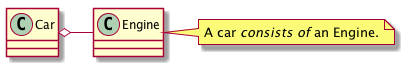
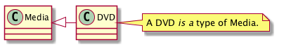
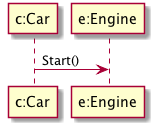

Preparing for the Exam
Table of Contents
1 About This Sprint
This sprint describes what you can do to prepare yourself for the exam.
2 User Stories covered in this Sprint
- As a student I want to pass the exam so that I can get the course credits and get on with my life.
- As a teacher I want the students to be able to study for the exam so they have a good chance of passing it.
3 Introduction
For historical reasons the exams in this course have been divided into two parts; one theoretical with true/false statements, and one practical where you do a design for a smaller system to show that you know how each of the design diagrams work. For historical reasons, the exams have also been in english. I am going to break with some of those traditions.
The Exams will be in Swedish, and will consist of Multiple Choice Questions.
Some generic tips for studying to the exam include:
- Use Your Sprint Test Plan and your Course Backlog. In each of the previous sprints in this course, you have worked on your Sprint Test Plan. This should now contain a fair amount of terms in the glossary. This is a good starting point for your revising. Do you recoginise the terms and know the differences between them? Do you know the notation for each diagram and term, and how to use it?
- Reflect on your Assignments. What did you do in the assignments? How did you use the diagrams? What worked, and what didn’t work? Were there any misunderstanding on your behalf that was pointed out to you?
- Look at old exams. Since I have changed plenty of things in the exam format this will not be a 100% preparation for the current exam, but it will help you to identify (some) important aspects to study further. You should also bear in mind that I have not created all of the old exams, which also introduces a certain discrepancy in format and style. For your benefit, I have made available a selection of old exams below. You can also ask the student reception for old exams.
- Read the course book. This may seem like very basic advice, but the course book does offer plenty of good advice on how to reason about object oriented design, in addition to thoroughly going through the UML notation. I tend to make sure that I don’t ask for things in an exam that cannot be figured out from the course book, since this should (imho) be the least common denominator in a course.
- Use the LITMUS Test Technically, this is part of a research study performed by Prof. Harald Störrle, but it works pretty well as a study help too. Run the Test and use it to identify areas where you need to study more.
3.1 Common Mistakes
When marking exams previous years I have seen some common mistakes. Below, I express concrete advice that should help you to get it right. At the very least, please use this list as a reminder to test your own understanding. If you are unsure, go back and revise the relevant parts of the course. I will add to this list as I see more things.
- Use Cases have actions in their names. A use case typically has a name that includes an action. For example, “Pay money”, “Book ticket”, “Reserve flight”. If you just use the noun (“money”, “ticket”, “flight”), there is no way of knowing what an actor is supposed to do in the use case. The nouns are good names for your concepts in your domain model, though.
- Don’t use composition or aggregation unless you are absolutely sure. First off, when you make the domain model there is no such thing as a composition or an aggregation; these are strictly hints for how to implement the system and thus only appear in your class diagram. Second, most relations between classes can be modelled as plain associations. The composition or aggregations may look cool because it’s got a fancy little diamond in one end, but if you are even wondering whether a relation should be an association or a composition, then it is a “simple” association.
- Put the symbols at the right end of the relation. In composition/aggregation this means that the diamond is on the owner side. For inheritance the triangle is on the parent side. To illustrate:
Car o- Engine note right: A car <i>consists of</i> an Engine.

Media <|- DVD note right: A DVD <I>is a</I> type of Media.

- Put the method in the called class. Consider the interaction diagram below. Where would you put the
Start()method? What I have seen in many exams is that there is a tendency to put it into theCarclass. But think about it for a while. It isc:Carwho is initiating the method call, and it wants thee:Engineto start. If you put theStart()method inCar, thenEnginehas no way of knowing that it has been called. Expressing it in a different way,Start()is an operation we wish to perform on thee:Engine, and therefore it must be offered by theEngineclass.
"c:Car" -> "e:Engine" : Start()

- A Class is a description of an Object. An Object is a concrete instance of a Class. Think of a class as a blueprint that tells the compiler that “When you create objects of this type, this is how much memory to allocate, and these are the methods that can be called”. An object is then a “physical” representation of a class description in memory. Once a system is running it has no clear representation of the class anymore – just the objects1. The borders between what a class is and what an object is is often muddled in dynamically typed languages such as JavaScript, so if your background is in such languages it is worth thinking twice about it.
- Dynamic diagrams deal in objects. Related to this is that when you look at the dynamic diagrams they tend to work with objects (and not classes). Consider, for example, sequence diagrams. In these diagrams it is specific instances of classes (i.e., objects) that have specific values on all their attributes, and these specific instances collaborate (with the help of method calls) to solve one particular scenario of execution. Remember that we may have instances without names
:Caras well as named instances that are assigned to a variable,myCar:Car. Also note that this does not imply that the second example knows that it is namedmyCar, this is just the name of the varible that is pointing to an object of the typeCar.
4 Learning Material
4.1 Old Exams
A small selection of old exams (For the course PA1415. The other courses are normally a 90-95% subset of this exam). The following were done before my involvement in the course (but I did provide the example solution for the January 2016 exam):
More recent exams made while I was involved in the course:
Keep in mind that the solutions are proposals, to give you an idea of how to thing when answering the questions. There are many other ways of solving the same problem, and there are many ways to make the solution proposals better.
4.2 Dictionary
Since the exam will be in swedish a translation of common terms are presented below. Sometimes the english term will be used also in swedish, for reasons of simplicity and clarity.
Note: These are my translations that does not necessarily correspond to any official standard. If you see anything that is obviously wrong, or if you have a better list, please contact me.
The terms are roughly organised into different groups below. This does not mean that the term is only valid in that group!
4.2.1 Development Methodology / Utvecklingsmetodik
| Engelska | Min Svenska | Kanske Riktig Svenska |
|---|---|---|
| Requirements Engineering | Kravhantering | |
| Requirement | Krav | |
| Analysis | Analys | |
| Design | Design | |
| Implementation | Implementation | |
| Testing | Testning | |
| Test Case | Testfall | |
| Development Phase | Utvecklingsfas | |
| Phase | Fas | |
| Backlog | Backlog | Att-göra-lista |
| Waterfall Model | Vattenfallsmodellen | |
| Iterative Development | Iterativ utveckling | |
| Incremental Development | Inkrementell utveckling | |
| SCRUM | SCRUM | Skärmytsling |
4.2.2 Use Cases
| Engelska | Min Svenska | Kanske Riktig Svenska |
|---|---|---|
| Use Case | Use Case | Användningsfall |
| Expanded Use Case | Expanded Use Case | Utökat Användningsfall |
| Expanderat Use Case | ||
| Use Case Diagram | Use Case-Diagram | |
| Actor | Aktör |
4.2.3 Interaction Diagrams / Interaktionsdiagram
| Engelska | Min Svenska | Kanske Riktig Svenska |
|---|---|---|
| Interaction Diagram | Interaktionsdiagram | |
| Communication Diagram | Kommunikationsdiagram | |
| Sequence Diagram | Sekvensdiagram | |
| System Sequence Diagram | Systemsekvensdiagram | |
| Class | Klass | |
| Object | Objekt | |
| Type | Typ | |
| Event | Händelse |
4.2.4 Class Diagrams / Klassdiagram
| Engelska | Min Svenska | Kanske Riktig Svenska | Kommentar |
|---|---|---|---|
| Domain Model | Domänmodell | ||
| Conceptual Model | Konceptuell Modell | (Samma som Domain Model) | |
| Concept | Koncept | ||
| Class Diagram | Klassdiagram | ||
| Attribute | Attribut | Medlemsvariabel | |
| Method | Metod | ||
| Message | Meddelande | Metodanrop | |
| Association | Association | ||
| Aggregate | Aggregat | ||
| Composition | Komposition | ||
| Association Attribute | Associationsattribut | ||
| Multiplicity | Multiplicitet | Kardinalitet | |
| Base Class | Basklass | ||
| Inheritance | Arv | ||
| Inheritance Hierarchy | Arvshierarki |
4.2.5 GRASP Patterns and Design Patterns
GRASP Patterns och Design Patterns are not translated; the english names are used.
5 Sprint Acceptance Tests
You are done with this sprint when:
- You feel well prepared for the exam.